©Ulm University 2012, Othmar Marti
[Nächste Seite] [Vorherige Seite]
[vorheriges Seitenende] [Seitenende] [Ebene nach oben] [PDF-Datei][Andere
Skripte]
4.3 Leitungen
Ebene Wellen (Siehe im Anhang Abschnitt A.4) können zwischen zwei Metallplatten
problemlos geführt werden. Abb. 4.139 zeigt, dass, wenn das elektrische Feld senkrecht
zu den Platten steht, dies mit den Randbedingungen vereinbar ist. Der Abstand der
Platten kann so klein man will gewählt werden, Leitung hat man immer noch. Die in
der Abbildung gezeigte Welle heisst TEM-Plattenwelle.
|
|
|
|
| TEM
Wellentyp | (symmetrische) Paralleldrahtleitung(Lecherleitung) | Koaxialleitung | Streifenleitung |
|
|
|
|
| Leiter-Grundform | |
|
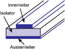 |
| elektrische
und
magnetische
Feldlinien |
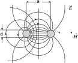 |
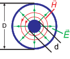 | |
| Leitungs-Wellenwiderstand | Z = 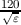⋅ ln 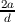[Ω]
für a > 2.5⋅d | Z = 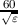⋅ ln [Ω] | Z = 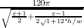⋅
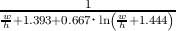
[Ω] für w ≥ h |
| Variationen
in den
Ausführungsformen |
Anwendung als
Antennenleitung
bei hohen
Frequenzen (Z =
240Ω,Z = 300Ω)
| Der Aussenleiter
wird meist
als Drahtgeflecht
ausgeführt.
(Z = 50Ω,Z =
60Ω,Z =
75Ω,Z = 200Ω) |
|
|
|
|
|
| |
| Tabelle 4.7.: | Homogene Leitungen, deren Abmessungen klein gegen die
Wellenlänge sind |
Tabelle 4.7 zeigt eine Zusammenstellung verschiedener Wellenleiter, bei denen die
Dimensionen klein gegen die Wellenlänge sind.
4.3.1 Leitungsgleichungen
Nach Abb. 4.140 kann man Zweidrahtleitungen, Koaxialleitungen und Streifenleitungen
mit folgendem phänomenologischen Ansatz[?] behandeln: Die Änderung der
Spannung u(x,t) und des Stromes i(x,t) längs der Leiterstrecke dx geschieht
wegen
- des Längswiderstandes R = R′⋅dx, wobei R′ der Widerstandsbelag ist
- der Längsinduktivität L = L′⋅dx, wobei L′ der Induktivitätsbelag ist
- des Querleitwertes G = G′⋅dx, wobei G′ der Leitwertbelag ist
- des Querkapazität C = C′⋅dx, wobei C′ der Kapazitätsbelag ist
Dies ist das in Abb. 4.140, rechts, angegebene Ersatzschaltbild. Für die Strom-und
Spannungsänderung erhalten wir
| u(x,t) - u(x + dx,t) = | -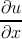⋅dx | = R′⋅dx⋅i(x,t) + L′⋅dx⋅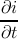 | | | |
|
| i(x,t) - i(x + dx,t) = | -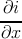⋅dx | = G′⋅dx⋅u(x,t) + C′⋅dx⋅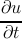 | | | | |
Die Leitungsgleichungen in differentieller Form lauten also
| - | = R′⋅i(x,t) + L′⋅ | (4.1)
|
| -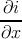 | = G′⋅u(x,t) + C′⋅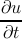 | (4.2) |
Wenn Gleichung (4.1) nach x und Gleichung (4.2) nach t
abgeleitet werden, können die Gleichungen kombiniert werden zur
Leitungs-Wellengleichung
oder Telegraphengleichung.
oder für den Strom
4.3.1.1. Fortschreitende, gedämpfte Wellen
Lösungen der Leitungs-Wellengleichung bekommt man mit dem Ansatz
u(x,t) = u(ω)⋅e-γx⋅eiωt + c.c. sowie i(x,t) = i(ω)⋅e-γx⋅ejωt + c.c.
Damit wird die Fortpflanzungskonstante
Setzt man den Ansatz in Gleichungen (4.1) und (4.2) ein, so sind die komplexen
Amplituden
| γ⋅u(ω) | = 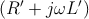 ⋅i(ω) | |
|
| γ⋅i(ω) | = 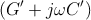 ⋅u(ω) | | |
Der Quotient aus komplexer Spannungsamplitude und Stromamplitude ist der
Leitungs-Wellenwiderstand
Bei einer verlustlosen Leitung (R′ = 0, G′ = 0) ist γ = α + jβ = jω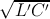, also rein
imaginär. Die Dämpfung ist null (α = 0) und β ≡ ω∕cph = ω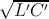. Damit ist der
Wellenwiderstand der verlustlosen Leitung
und die Phasengeschwindigkeit der Leitungswelle
4.3.1.2. Wellenfeld auf einem endlichen Leitungsstück mit reflektierter Welle
Als allgemeine Lösung setzen wir eine hin- und eine herlaufende Welle an.
| u(x,t) = | 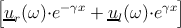⋅eiωt + c.c. | = | u(x,ω)⋅ejωt | | | |
|
| i(x,t) = | 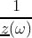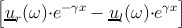⋅ejωt + c.c. | = | i(x,ω)⋅ejωt | | | | |
Man erhält diese Gleichungen, indem Gleichung (4.5) benutzt wird. Eine nach links
laufende Welle kehrt dabei die Stromrichtung um.
Unter Verwendung der Koordinaten in Abb. 4.141 bekommt man für x2
| u(x2,ω) | = ur⋅e-γx2
+ ul⋅eγx2
| |
|
| z(ω)⋅i(x2,ω) | = ur⋅e-γx2
- ul⋅eγx2
| | |
Wir können diese Gleichungen nach ur und ul auflösen und erhalten
| ur(ω) | = ![[u (x ,ω ) + z (ω)⋅i(x ,ω)]
-- 2 -- - 2](./Leitungen_files/phys_elektr1559x.png) ⋅eγ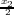 ⋅eγ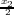
| (4.8)
|
| ul(ω) | = 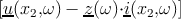 ⋅e-γ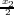
| (4.9) |
Eingesetzt in unseren Ansatz ergibt sich
| u(x,ω) | = u(x2,ω) cosh γ(x2 - x) + z(ω)⋅i(x2,ω) sinh γ(x2 - x) | (4.10)
|
| i(x,ω) | = i(x2,ω) cosh γ(x2 - x) + u(x2,ω) sinh γ(x2 - x)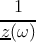 | (4.11) |
Diese Gleichung kann auch in Matrixschreibweise angegeben werden
Damit stehen die Leitungsgleichungen in Vierpol-Kettenform da (siehe auch Abb.
4.141, rechts).
4.3.1.3. Anwendung der Leitungsgleichungen
Mit den Leitungsgleichungen können
- durch ein Leitungsstück gegebener Länge ℓ Strom in Spannung oder
Spannung in Strom transformiert werden.
- eine Abschlussimpedanz zL(ω) in eine Eingangsimpedanz z1(ω) transformiert
werden.
Im zweiten Fall wendet man die Gleichung (4.12) an und erhält für die Anordnung
nach Abb. 4.142
Für ein verlustloses Leitungsstück gilt die Gleichung (4.6), z(ω) ≡ Z und die dazu
führenden Überlegungen so dass die Gleichungen (4.10) und (4.11)
| u(x,ω) | = u(x2,ω) cos β(x2 - x) + Z⋅i(x2,ω) sin β(x2 - x) | (4.14)
|
| i(x,ω) | = i(x2,ω) cos β(x2 - x) + u(x2,ω) sin β(x2 - x)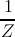 | (4.15) |
wird. Analog ergibt sich für die Widerstandstransformation nach Gleichung
(4.13)
4.3.1.4. Kurzgeschlossene Leitung
Bei einer kurzgeschlossenen, verlustlosen Leitung (dann ist zL(ω) = 0) ist die
Eingangsimpedanz mit Gleichung (4.16) durch
gegeben. Die Schaltung und der Eingangswiderstand sind in Abb. 4.143 angegeben.
Die Eingangsimpedanz wird zweckmässigerweise als Funktion von ℓ∕λ angegeben. Man
findet folgendes Verhalten:
|
|
| Leitungen mit ℓ < λ∕4: | induktives Verhalten |
| Leitungen mit ℓ = λ∕4: | Verhalten wie beim Parallelschwingkreis |
| Leitungen mit λ∕4 < ℓ < λ∕2: | kapazitives Verhalten |
| Leitungen mit ℓ = λ∕2: | Verhalten wie beim Serienschwingkreis |
|
|
| |
Dann wiederholt sich dieses Verhalten.
In Abb. 4.144 links ist gezeigt, dass man mit einer einzelnen Stichleitung eine
konzentrierte Impedanz z1K erzeugen kann. Auf der rechten Seite in dieser Abbildung
sieht man, dass eine ℓ = λ∕4-Leitung als verlustfreie Stütze für eine Lecherleitung dienen
kann.
Wenn eine Leitung der Impedanz Z an einen Verbraucher der Impedanz zL
angeschlossen werden muss, dann kann man diese Anpassung erreichen, indem
man wie in Abb. 4.145 eine Leitung variabler Länge und eine Stichleitung mit
verschiebbarem Kurzschluss verwendet. Eine vollständige Anpassung an den komplexen
Verbraucher zL ist mit drei Stichleitungen im Abstand λ∕4 möglich. Dabei
muss, anders als in Abb. 4.145 der Abstand zum Verbraucher nicht geändert
werden. Die Berechnung erfolgt, indem man die obigen Formeln abschnittsweise
anwendet. Alternativ kann man mit einem Smith-Diagram die Aufgabe graphisch
lösen.
4.3.1.5. Offene Leitung
Bei einer offenen, verlustlosen Leitung (dann ist zL(ω) = ∞) ist die Eingangsimpedanz
mit Gleichung (4.16) durch
gegeben. Die Schaltung und der Eingangswiderstand sind in Abb. 4.146 angegeben.
Die Eingangsimpedanz wird zweckmässigerweise als Funktion von ℓ∕λ angegeben. man
findet folgendes Verhalten:
|
|
| Leitungen mit ℓ < λ∕4: | kapazitives Verhalten |
| Leitungen mit ℓ = λ∕4: | Verhalten wie beim Serienschwingkreis |
| Leitungen mit λ∕4 < ℓ < λ∕2: | induktives Verhalten |
| Leitungen mit ℓ = λ∕2: | Verhalten wie beim Parallelschwingkreis |
|
|
| |
Dann wiederholt sich dieses Verhalten.
Wie Abb. 4.147 zeigt, kann man eine vollständige Anpassung einer Leitung mit der
Impedanz Za an eine Leitung der Impedanz Zb erreichen, wenn man, nach Gleichung
(4.16) ein Zwischenstück der Länge λ∕4 mit dem Wellenwiderstand
einfügt. Ein analoges Beispiel ist die Vergütung von Linsen. Zur Entspiegelung bringt
man, wie in Abb. 4.147, Mitte, gezeigt eine Schicht der Dicke λ∕4 mit dem
Brechungsindex n = 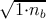 = 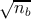. Dies ist äquivalent zur Gleichung (4.18), da für ebene
elektromagnetische Wellen gilt:
Weiter kann man aus den obigen Gleichungen ableiten, dass bei hohen
Frequenzen 50 Ω-Messkabel stets mit der Nennimpedanz abgeschlossen werden müssen.
Wenn zum Beispiel ein 1-Meter-Kabel mit der Dielektrizitätszahl ε = 1 mit einem
hochomigen Anschluss (z.B. ein Oszilloskop) verbunden wird, dann liegt am Eingang
der Leitung bei etwa 53 MHz ein Kurzschluss vor.
Aus den Maxwellgleichungen (siehe Anhang A.1) sowie den Materialgleichungen für
isotrope Materialien
erhält man die skalaren Gleichungen
| - | = -μμ0 | (4.21)
|
| - | = -μμ0 | (4.22)
|
| - | = -μμ0 | (4.23)
|
| - | = εε0 | (4.24)
|
| - | = εε0 | (4.25)
|
| - | = εε0 | (4.26)
|
 + + + + | = 0 | (4.27)
|
| + + | = 0 | (4.28) |
Unter der Annahme, dass sich die Wellen in die x-Richtung ausbreiten (Siehe Abb.
4.148), dass eine TEM-Welle und dass eine homogene Leitung vorliegt (d.h.
= e-γx+jωt + c.c. sowie = e-γx+jωt + c.c. mit
γ = α + jβ der Fortpflanzungskonstanten, wobei α die Dämpfungskonstante und β der
Wellenvektor ist) reduzieren sich die Gleichungen auf
| - | = 0 | (4.29)
|
| γEz | = -μμ0jωHy | (4.30)
|
| γEy | = -μμ0jωHz | (4.31)
|
| - | = 0 | (4.32)
|
| γHz | = εε0jωEy | (4.33)
|
| - γHy | = εε0jωEz | (4.34)
|
| + | = 0 | (4.35)
|
| + | = 0 | (4.36) |
Die Fortpflanzungskonstante γ erhalten wir durch die Kombination der Gleichungen
(4.30), (4.31), (4.33) und (4.34).
oder
wobei c0 die Vakuumlichtgeschwindigkeit ist.
Weiter wird
| Ey = | Hz | (4.39)
|
Ez = = | - Hy Hy | (4.40) |
Also ist das Amplitudenverhältnis an einem beliebigen Ort.
mit Z0 = = 120π ≈ 377Ω der Wellenwiderstand des Vakuums. Also ist in
einer TEM-Welle das Amplitudenverhältnis zwischen elektrischem und magnetischem
Feld überall gleich dem einer ebenen Welle!
Das -Feld ist rotationsfrei in der yz-Ebene, da die x-Komponente
und da auch Hx = 0 ist.
Damit kann man das -Feld mit einem elektrostatischen Potential φ darstellen,
also
Zusammen mit div = ⋅ = 0 bekommt man die Potentialgleichung
= 0 bekommt man die Potentialgleichung
Also ist das -Feld bei TEM-Wellen einem statischen -Feld, beschrieben durch die
Elektrostatik und die Potentialtheorie, äquivalent (Siehe auch Abb. 4.149)
.
Das -Feld steht überall senkrecht zum -Feld, da
Jeder der beiden Koeffizienten kann mit tan α dargestellt werden. Da die
-Feldlinien stets senkrecht zu den  -Feldlinien stehen, verlaufen sie entlang der
Potentiallinien des elektrostatischen Potentials.
-Feldlinien stehen, verlaufen sie entlang der
Potentiallinien des elektrostatischen Potentials.
Wir gehen nun zu integralen Grössen über (Die Integrationswege sind in 4.150
gezeigt). Es liegt, da aus Ex = 0 auch Ḋx = 0 folgt, ein reiner Leitungsstrom
vor.
An der Stelle x ist er
Für die Spannung folgt
Das Vierpol-Ersatzschaltbild eines verlustfreien Leiterstückes wird durch
einen Kapazitätsbelag C′ und einen Induktivitätsbelag L′ charakterisiert. Der
Wellenwiderstand ist dann
und die Phasengeschwindigkeit
 | (4.48) |
Zur Berechnung des Kapazitätsbelages (siehe Abb. 4.151, links) ermitteln wir auf
einem Leiterstück der Länge dx die Ladung Q = Q′dx. Aus den Maxwellschen
Gleichungen in Integralform
Das erste Integral ergibt (siehe Abb. 4.151, links)
Das Oberflächenintegral über A kann in drei Teile aufgeteilt werden. Die zwei
Zylinderendflächen tragen nichts zum Integral bei, da dort tangential zur Oberfläche
ist. Allein die Zylindermantelfläche trägt zum Integral bei. Das in Abb. 4.151, links,
eingezeichnete Flächenelement hat die Seiten xdx und d, wobei d das Linienelement
entlang des Zylinderumfangs ist. Die Richtung von d folgt mit der rechten-Hand-Regel
aus der Richtung von x. Der Normalenvektor auf das Flächenelement steht senkrecht
auf d und  x. Also ist der Normalenvektor
x. Also ist der Normalenvektor
Die Fläche ist da = dsdx. Also erhalten wir
| Q′dx | =
A ⋅da | = |
A ⋅dsdx | | | |
|
| =
A ⋅ dx | = |  A x⋅
A x⋅ dx dx | | | |
|
| =
A ⋅xdx | = | ⋅xdx | (4.49) |
Mit C′⋅dx = Q′⋅dx∕u wird die Kapazität
da = ist. Weiter haben wir die Vektoridentität
verwendet. Wir setzen ≡, ≡x und ≡ d und erhalten
da x ⊥ d ist.
Um den Induktivitätsbelag zu ermitteln (siehe Abb. 4.151, rechts), berechnet man
den Fluss ϕ zwischen der Stelle x und x + dx
wobei über eine fiktive Fläche A zwischen den beiden Leitern integriert wurde. Das
Flächenelement hat die Grösse da = dxdr. Der Normalenvektor wird durch
gegeben. Also ist
| ϕ | =
A ⋅da | = |
A ⋅drdx | | | |
|
| =
A ⋅ dx | = | dx | | | |
|
| = dx | = | xdx | (4.52) |
Da die Induktivität L längs der Strecke dx gegeben ist durch L = L′⋅dx = ϕ ⋅dx∕i(x,ω)
folgt für den Induktivitätsbelag
weil = ist.
Für den Leitungswellenwiderstand erhalten wir
Weiter ist die Phasengeschwindigkeit
4.3.2 Elektrische Leitungen bei hohen Frequenzen
Die Leitung von elektromagnetischen Wellen bei hohen Frequenzen ist mit gewöhnlichen
Kabeln nicht mehr möglich. Üblich für die niedrigeren Frequenzen sind Hohlleiter und
für die ganz hohen Frequenzen Streifenleiter.
Einige Bauformen sind in der Abb. 4.152 dargestellt. Prinzipiell sind alle Bauformen
möglich. In der Praxis werden jedoch nur
- Rechteck-Hohlleiter mit einem Seitenverhältnis von 2:1 und
- Rundhohlleiter verwendet.
Die letzteren werden aber nur für sehr spezielle Leitungsprobleme verwendet, unter
anderem da durch ihre hohe Symmetrie keine Polarisationserhaltung garantiert
ist.
Aus den Maxwell-Gleichungen und den üblichen Randbedingungen lassen
sich leicht die möglichen Wellenleitermoden bestimmen. Da die -Felder an
den Wänden eine Knotenlinie haben müssen, muss transversal mindestens
eine halbe Wellenlänge in den Hohlleiter passen. Deshalb gibt es eine
untere Grenzfrequenz, unter der eine Wellenführung nicht möglich
ist .
Die unterste Mode (die mit der längsten Wellenlänge) in einem rechteckförmigen
Wellenleiter wird die TE10-Mode oder auch die H10-Mode genannt. Die erste
Bezeichnung stammt daher, dass das -Feld senkrecht zur Ausbreitungsrichtung
steht, also transversal ist. Die zweite Bezeichnung besagt, dass das -Feld eine
longitudinale Komponente hat, eine Komponente die nur in einer geführten Welle
existieren kann. Bei beiden gibt der erste Index die Zahl der halben Sinusbögen über der
längeren Seite an, der zweite die Zahl der halben Sinusbögen über der kürzeren Seite.
Abb. 4.153 zeigt die dazugehörigen Feldlinienbilder.
Durch die Wechselwirkung mit den Wänden ist die Wellenausbreitung in einem
Wellenleiter dispersiv. Abb. 4.154 zeigt die Phasengeschwindigkeit als Funktion der
Wellenlänge. Unterhalb der unteren Grenzfrequenz ωgr, bei der λ0∕2 = a ist, gibt es
keine Wellenausbreitung. Die Amplitude wird exponentiell gedämpft. Oberhalb der der
Grenzfrequenz wird die Wellenausbreitung durch die Wandströme und deren resistive
Verluste gedämpft. Die Verluste sind für die Grundmode TE10 minimal. Die beste
Transmission erreicht man mit supraleitenden Wellenleitern. Ab 2ωgr wird die
TE20-Mode auch geführt. Typischerweise verwendet man bei Wellenleitern nicht den
ganzen möglichen Bereich, in dem nur die Grundmode geführt wird, sondern
nur 1.25⋅ωgr
1.9⋅ωgr. Die untere Grenzfrequenz rührt von den divergierenden
Verlusten für ω → ωgr+ her, die obere von der Tatsache, dass auch unterhalb von
2ωgr die TE20-Mode eine merkbare Amplitude bekommt. Weiter ist in diesem
Bereich die Änderung der Phasengeschwindigkeit minimal, die Dispersion also
gering .
Für die Wellenlänge λL im Hohlleiter gilt die Formel
wobei λgr die zur Grenzfrequenz ωgr gehörige Wellenlänge ist.
Elektromagnetische Wellen werden einerseits durch die in den Hohlleitern vorhandene
Luft, andererseits aber auch durch die Absorption in den Metallwänden der
Hohlleiter oder in den Metallstreifen der Streifenleiter gegeben. Abb. 4.155 zeigt
das Absorptionsspektrum in Luft. Bei tiefen Frequenzen ist es vor allem die
Absorption durch Wasser und durch Sauerstoff (mit magnetischem Dipolmoment!),
die dominiert. Im Infrarotbereich kommt die Absorption durch CO2 hinzu.
Zwischen 14 und 8 μm ist ein Absorptionsfenster, wie auch zwischen 1100 und 300
nm.
Die Absorption steigt in Metall-Hohlleitern stark mit der Frequenz an. Zwei Gründe
gibt es:
- Die effektive Leiterdicke nimmt wegen des Skineffektes mit 1∕ ab.
Dadurch wird die Wellenleitereigenschaft des Metalls schlechter (Siehe Abb.
4.156).
- Um auch bei höheren Frequenzen als einzige geführte Mode nur die
Grundmode zu haben, muss die lineare Dimension des Wellenleiters
proportional zur Wellenlänge sein. Da dadurch die zur Führung beitragende
Oberfläche des Wellenleiters proportional zu 1∕ω ist, nimmt die Dämpfung
entsprechend zu.
Insgesamt ergibt sich eine zu ω3∕2 proportionale
Dämpfung .
Abb. 4.157 zeigt die Dämpfungseigenschaften für Wellenleiter. Das für viele
physikalische Experimente wichtigste Frequenzband ist das X-Band zwischen 8.2 und
12.4GHz.
Für höhere Frequenzen verwendet man oft Streifenleiter. Sie können mit
photolithographischen Verfahren hergestellt werden, sind also in kleinen Abmessungen
wesentlich präziser herzustellen als die Hohlwellenleiter. Die Dämpfung ist im
Allgemeinen höher bei Streifenleitern als bei Hohlleitern. Andererseits hat dies, zum
Beispiel bei der Mobilkommunikation, wegen den geringen Grössen der Geräte, kaum
einen Einfluss. Zusammen mit SMD-Bauteilen (Surface Mounted Device) lassen sich
sehr effizient Mikrowellenschaltungen industriell herstellen. Der Streifenleiter in der
Abb. 4.158 hat die folgenden Eigenschaften:
- Es gibt zwei benachbarte Leiteroberflächen, die unterschiedliche Ladungen
tragen, also den Anfang und das Ende von -Feldlinien darstellen.
- Es gibt Grenzflächen zwischen verschiedenen Dielektrika, die von Feldlinien
durchsetzt sind.
Im Gegensatz zu Hohlleitern gibt es bei Streifenleitern sowohl beim -Feld als auch
beim -Feld longitudinale Komponenten. Dies rührt daher, dass an Grenzflächen
neben der Normalkomponente von auch die Tangentialkomponente von
stetig sein muss. Man spricht deshalb von Quasi-TEM-Moden oder von
Hybrid-Moden.
4.3.3 Optische Leitungen
Bei dielektrischen Wellenleitern, zu denen auch optische Fasern gehören,
werden Wellen im Medium mit dem grössten Brechungsindex geführt. Die
Ausbreitungsgeschwindigkeit hängt von der Brechzahl ab, also cn = c0∕n. Beim
Übergang vom optisch dichteren Medium mit n1 nach dem optisch dünneren Medium
mit n2 < n1 kann bei flachem Einfall Totalreflexion auftreten. Das Snelliussche
Brechungsgesetz (siehe auch Abb. 4.159) lautet
| n1⋅ sin α1 | = n2⋅ sin α2 | für den gebrochenen Strahl beiα1 < α0 | | (4.57)
|
| α1 | = α3 | für jeden gespiegelten Strahl | | (4.58)
|
| α0 | = arcsin() | Grenzwinkel der Totalreflexion | | (4.59) |
für den gebrochenen sowie den reflektierten Strahl. Nach diesem Prinzip wird Licht in
Multimoden-Wellenleitern geführt. Die unterschiedlichen Brechungsindizes werden mit
Dotierstoffen erreicht. So vergrössert, zum Beispiel, eine Dotierung mit Ge den
Brechungsindex. Eine Dotierung mit F verringert ihn.
4.3.3.1. Verlustmechanismen in Wellenleitern
Optische Wellenleiter werden in der Kommunikationstechnik vor allem wegen ihren geringen
Verlusten
(für eine Übersicht über den Dämpfungsverlauf siehe Abb. 4.160) und ihrer geringen
Anfälligkeit auf externe Störungen. An der Universität Ulm hat ein Wellenleiter,
der mitten durch einen Brand führte, während dem Brand anstandslos Daten
übertragen!
Die Dämpfung bewirkt einen exponetiellen Abfall der übertragenen Leistung.
Üblicherweise wird die Dämpfung α in dB (deziBel) angegeben. Der Leistungsabfall ist
also
wobei P0 die Leistung am Eingang der Faser ist und α der Dämpfungsfaktor in dB.
Die Dämpfung setzt sich aus drei Komponenten zusammen:
- der Streuung
- der Absorption
- der Biegedämpfung
zusammen. Die Biegedämpfung rührt von der Krümmung der Glasfaser her und ist,
zumindestens für Licht das über Totalreflexion geleitet wird, einfach zu verstehen. Wird
das Kabel in einer zu engen Schleife gelegt, so ist die Bedingung der Totalreflexion nicht
mehr erfüllt und die Verluste steigen. Zusätzlich zu dieser Makrodämpfung kommt die
Mikrodämpfung, deren Ursache Spannungen in der Faser und Schwankungen in der
Materialzusammensetzung, zum Beispiel durch eine nicht konstante Dichte der
Dotierstoffe, sind.
Die Absorption hängt von der Reinheit des Materials ab. Insbesondere störend ist die
OH--Bande bei 1380 nm und bei 1240 nm sowie die Infrarotabsorption über
1600 nm.
Der hauptsächliche Dämpfungsmechanismus ist jedoch die Rayleigh-Streuung,
die bis zu 95% der gesamten Dämpfung ausmacht. Sie rührt daher, dass im
Glas mikroskopische Dichteschwankungen existieren, die sich aus Gründen der
Thermodynamik auch nicht komplett eliminieren lassen, sowie wegen der notwendigen
Dotierstoffe.
Abb. 4.161 zeigt Dämpfungsspektren von Gradientenfasern und von Einmodenfasern.
Die Einmodenfaser (auch Monomode-Faser genannt) hat eine geringere Dämpfung, da
ihr Kern weniger dotiert werden muss. Der starke anstieg der Dämpfung unter 1250 nm
Wellenlänge rührt daher, dass die Faser für kurze Wellenlängen nicht mehr einmodig ist,
dass also die Führungseigenschaften nicht mehr so perfekt sind. Infrarotabsorption,
Rayleigh-Streuung und Wasserabsorption (OH--Absorption) sind bei beiden Typen zu
erkennen.
4.3.3.2. Typen von optischen Wellenleitern
Es sind drei Typen von optischen Wellenleitern üblich (siehe auch Abb. 4.162)
- Stufenindexfasern
- Gradientenindexfasern
- Einmodenfasern
Bei allen dreien kann das Indexprofil mit
angegeben werden. Dabei ist a der Kernradius, r der Abstand vom Fasermittelpunkt
und n1 der Brechungsindex im Kern. Δ ist die relative Brechzahldifferenz zwischen Kern
und Mantel. Ausserhalb des Kerns, also für r > a hat man
Diese allgemeine Funktion, die auch über den ganzen Faserquerschnitt gilt, ist für eine
Stufenindexfaser
Stufenindexfaser
In der Stufenindexfaser werden alle Lichtstrahlen, für die sin α1 ≥ N2∕n1 gilt total
reflektiert, das heisst geführt[?]. Diese aus Abb. 4.163 ablesbare Bedingung kann auch
als
 | (4.64) |
geschrieben werden. Strahlt man aus der Umgebung mit dem Brechungsindex n0
Licht unter dem Winkel Θ0 ein, so gilt an der Eintrittsfacette n0 sin Θ0 = n1 cos α1.
Daraus folgt n0 sin Θ0 ≤ und somit
Damit werden alle Lichtstrahlen, für die die obige Bedingung gilt, geführt. Diese
Bedingung ist aber auch äquivalent zur Definition der Numerischen Apertur eines
Objektivs. Also sagt man, dass
sei die numerische Apertur der Faser. Der maximale Wert von Θ0 heisst der
Akzeptanzwinkel und ist
Für einen Brechungsindex des Kerns n1 = 1.57 und einen Brechungsindex des Mantels
n2 = 1.51 in Luft (n0 = 1) ergibt sich N.A. = 0.43 und damit der Akzeptanzwinkel
Θ0 = 25.50.
Wenn es darum geht, Licht aus einem räumlich eng begrenzten Gebiet mit einer
relativ hohen numerischen Apertur zu sammeln, ohne dass eine Abbildung
gewünscht wird, kann man vielfach anstelle von Linsen Fasern mit ähnlichen oder
sogar grösseren numerischen Aperturen verwenden. Mit einigen Fasern lässt
sich so sehr viel effizienter emittiertes Licht sammeln als mit einer einzelnen
Linse.
Gradientenindexfaser
In Gradientenindexfasern gilt für die Indexfunktion nach Gleichung (4.61) analog zu
Gleichung (4.63)
Dabei ist r der Abstand vom Kernzentrum. Der Unterschied im Brechungsindex in
Gleichung (4.61) ist meistens klein, d.h. Δ « 1. Der Exponent ist andererseits häufig
α = 2. Also kann für den Brechungsindex als Funktion der Position näherungsweise
angenommen werden
wobei ρ ≡ a∕ ist. Zur Berechnung der Bahnkurve nehmen wir an, dass n1 entlang
der Faser nicht variiert.
Um den Lichtweg, wie er in Abb. 4.164 angegeben ist, zu berechnen, gehen wir nach
Pérez[?] von der vektoriellen Gleichung
Mit der Gaussschen Näherung ds ~ dz erhält man für eine radiale Achse
x
Mit
und da n1 nicht entlang der Faser (z!) nicht ändert, bekommt man
Da bei den meisten Glasfasern Δ « 1 ist ist auch n ≈ n1. Deshalb erhält man
schliesslich für die Differntialgleichung des Lichtweges
Der Lichtweg durch eine Gradientenindexfaser mit paraboloidem Indexprofil wird
durch eine der Schwingungsgleichung ähnliche Gleichung beschrieben. Die allgemeine
Lösung ist also
Zur Berechnung der Schwingungsform nehmen wir an, dass ein Lichtstrahl im
Abstand xe von der Faserachse mit der Steigung xe′ = dxe∕dz in die Faser eintritt.
Dann haben wir im Innern der Faser
| xe | = x(0) = A | (4.75)
|
| (n1xe′) | = z=0 = | (4.76) |
Nach Pérez[?] kann damit die optische Transfermatrix bestimmt werden. Die Lösung
für den speziellen Fall xe = 0 und n1xe′≠0 ist
wobei p = 2πρ gesetzt wurde. Man ersieht aus Gleichung (4.77),
dass alle Lichtstrahlen in Achsennähe sich periodisch im Abstand p
schneiden .
Die numerische Apertur einer Gradientenfaser ist eine Funktion von a, n1 und
ρ = a∕, also von der maximalen Differenz des Brechungsindexes Δ. An der
Eintrittsfläche haben wir
Die Bedingung, dass ein Lichtstrahl nicht aus dem Kernbereich herausläuft, also dass
|x(z)| < a ∀z ist wegen |x| = |ρxe′ sin(z∕ρ)|≤|ρxe′| immer dann erfüllt, wenn
|ρxe′|≤ a ist. Dann gilt
Damit ist die Numerische Apertur berechnet. Für eine Beispielfaser mit n1 = 1.57,
einem Kerndurchmesser von a = 40μm und einem Indexsprung von Δ = 0.06
erhält man ρ = 115μm und damit die numerische Apertur N.A. = 0.54. Zur
Illustration zeigt Abb. 4.164 ein gemessenes Brechzahlprofil. Der Knick unten
links und rechts zeigt den Durchmesser des Kerns an. Der Dip in der Mitte ist
produktionsbedingt.
Einmodenfasern
Da die Kerne bei den Gradientenfasern und den Stufenindexfasern meistens so weit
sind, dass mehrere Moden übertragen werden, können sie kurze Impulse im ns-Bereich
oder kürzer nicht über lange Strecken übertragen. Lichtstrahlen, die unter verschiedenen
Winkeln eintreten, legen unterschiedlich lange Wege zurück. damit verbreitern sich
Impulse proportional zu der Länge der Faser. Wenn nun der Kerndurchmesser auf
wenige Mikrometer verkleinert werden, kann die Faser nur noch eine Mode übertragen.
Die Lösung des Laufzeitproblems erkauft man sich mit grossen Schwierigkeiten bei der
Justage von Faserspleissen.
Einkopplung in optische Wellenleiter
Zur Charakterisierung der Einkopplung verwendet man einerseits den
Kopplungswirkungsgrad ηK = P2∕P1, der das Verhältnis von eingekoppelter Leistung
zu angebotener Leistung anzeigt, oder, andererseits, die Kopplungsdämpfung
αK = 10 lg(P2∕P1), die in dB gemessen wird.
Wenn eine Laserdiode oder eine LED in eine Faser gekoppelt wird, setzt man für P1
die Leistung des Senders ein. P2 ist dann die in der Faser transportierte Leistung. Der
Kopplungswirkungsgrad zwischen optischem Sender und dem optischen Lichtwellenleiter
hängt von folgenden Grössen ab:
- Strahlungscharakteristik des Senders
- lokaler Akzeptanzwinkel des optischen Wellenleiters
- Abstand zwischen dem Sender und dem optischen Wellenleiter
- Versatz der optischen Achsen von Sender und optischem Wellenleiter
- Neigung der optischen Achsen von sender und Wellenleiter.
Als Beispiel betrachten wir die Kopplung einer flächigen LED an einen Wellenleiter[?].
Die LED wird als Lambert-Strahler modelliert.
wobei rLED der Radius der emittierenden Fläche der LED ist, LLED die Strahldichte
der LED und Ω0 der Raumwinkel, in den sie abstrahlt. Die in eine Gradientenfaser mit
dem Profilparameter α eingestrahlte Leistung ist
dabei ist
Wie weiter oben eingeführt ist a der Radius des Wellenleiterkerns, N.A. die
numerische Apertur und α der Profilparameter. Aus den obigen Gleichungen errechnet
man, dass der Koppelwirkungsgrad
Wenn der Durchmesser des LED-Chips an den Durchmesser des Wellenleiters
angepasst ist, erhält man
Damit bekommt man
|
|
| Wellenleitertyp | Kopplungswirkungsgrad |
| Stufenindexfaser (α →∞) | ηK = N.A.2 |
| Gradientenindexfaser (α = 2) | ηK = |
|
|
| |
Man ersieht daraus, dass der Kopplungswirkungsgrad bei angepassten Durchmessern
für Stufenprofilfasern mit N.A. = 0.5 ηK = 0.25 und für N.A. = 0.24 ηK = 0.0576 ist.
Für Gradientenindexfasern mit dem gleichen Kerndurchmesser ist die Einkoppeleffizient
jeweils halb so gross.
Der Kopplungswirkungsgrad kann über ein sogenanntes Phasenraumdiagramm wie in
Abb. 4.166 gezeigt, abgeschätzt werden. Bei diesem wird der Sinus des Enfallswinkels
relativ zur numerischen Apertur quadriert (2 gegen die Fläche der LED relativ
zur Fläche des Wellenleiterkerns aufgetragen. Man ersieht aus dem Diagramm, dass für
den Fall dass der Kerndurchmesser sehr gross wird, die Gradientenindexfaser fast den
gleichen
Kopplungswirkungsgrad hat wie die Stufenindexfaser.
Folgende Regeln können abgeleitet werden:
- Die numerische Apertur der Faser sollte so gross wie möglich sein
- Der Kerndurchmesser des optischen Wellenleiters sollte so gross wie
möglich sein, mit der Nebenbedingung, dass die Modendispersion ein vorher
festgelegtes Mass nicht überschreiten darf.
- Der Profilparameter α sollte so gross wie möglich sein, also eine Stufenindexfaser .
Neben der direkten End-zu End-Kopplung werden auch Koppeloptiken verwendet.
Die Koppeldämpfungen der gebräuchlichsten Bauarten sind in der Tabelle 4.8
zusammengefasst.
|
|
| Art der Koppeloptik zwischen Sender und Faser | Koppeldämpfung |
|
|
| Stirnflächenkopplung | 5 dB
8 dB |
| Kugellinse oder Zylinderlinse | 1.5 dB
5 dB |
| Faserende dachförmig angeschliffen | 1.5
2 dB |
| Faserende sphärisch angeschmolzen | 0.2
1 dB |
| Faserende als taper ausgezogen | 0.2
1 dB |
|
|
| |
| Tabelle 4.8.: | Koppeldämpfung bei Faser-Faser-Kopplung |
Die Abbildung 4.167 zeigt den Einfluss von Fehlern auf die Koppeldämpfung
dargstellt ist
-
Kernversatz
- Unter dieser Grösse ist der Abstand der Symmetrieachsen der
beiden optischen Wellenleiter zu verstehen. Die Darstellung zeigt, dass um
die Dämpfung klein zu halten dieser Fehler kleiner als ein zehntel des
Kerndurchmessers sein muss. Dies heisst für Multimodefasern eine radiale
Positioniergenauigkeit von etwa 2 μm und für Einmodenfasern von etwa 200
nm!
-
Axialer Versatz
- Unter dieser Grösse versteht man den Abstand der beiden
Faserendflächen. Dieser parameter ist weniger kritisch. Für den gleichen
Fehler wie beim Kernversatz darf der Abstand bei Multimodefasern etwa 15
μm und bei Einmodenfasern 1.5 μm betragen.
-
Winkelfehler
- Mit dieser Grösse ist die Verkippung der Faserachsen gegeneinander
gemeint. Um den gleichen Fehler wie beim Kernversatz oder beim axialen
Abstand zu haben, muss der Winkelfehler kleiner 10 sein.
Modenverteilung bei Glasfasern
Abb. 4.168 zeigt das Modenprofil eines Einmoden-Wellenleiters. Die Breite bei 1∕e ist
hier etwa 10 μm. Abb. 4.169 zeigt den Felddurchmesser als Funktion desr Wellenlänge.
Sehr schön sieht man den Einmodenbereich rechts mit einem Minimum kurz bevor die
Faser zweimodig wird.
4.3.3.3. Bragg-Gitter und Bragg-Sensoren
Wenn durch germaniumdotierte optische Wellenleiter hohe Leistungen gesandt werden
kann das Licht Modulationen des Brechungsindexes im Faserkern erzeugen. Diese
periodischen Störungen des Brechungsindexes wirken wie ein Bragg-Gitter, analog zur
Streuung von Röntgenstrahlen in Kristallen. Heutzutage werden Faser-Bragg-Gitter als
Sensoren und Spiegel verwendet[?].
Herstellung
Die Herstellung von Bragg-Gittern in Quarz-Fasern beruht auf der Lichtempfindlichkeit
von Germanium-dotiertem Quarz. Ein einzelnes Photon (λ = 146nm) kann
eine Indexändrung auslösen. Man glaubt, dass oxidierte Germanium-Dimere
(O3Ge - GeO3) durch das Licht aufgespalten werden und dass sich so ein Farbzentrum
bildet. Wichtig ist dabei, dass ein Sauerstoffdefizit um dieses Farbzentrum
herrscht.
Die Photoempfindlichkeit kann gesteigert werden, indem die Faser mit Wasserstoff
beladen wird, indem sie mit einer Wasserstoffflamme erhitzt werden und indem Bor
zusätzlich zum Germanium dotiert wird.
In einem von verschiedenen diskutierten Modellen wird die Indexvariation im
nahen Infrarot auf Absorptionsänderungen im ultravioletten zurückgeführt. Die
dielektrische Funktion eines Materials besteht aus einem Realteil und einem
Imaginärteil
Dabei ist n der Brechungsindex und κ die Absorptionskonstante. Aus der Kausalität
der Physik hatten Kramers und Kronig ihre Beziehung
zwischen dem Real- und dem Imaginärteil abgeleitet. Wenn nun in einem
Frequenzbereich der Imaginärteil (oder auch der Realteil) sich ändert, hat dies einen
Einfluss auf den Realteil (oder Imaginärteil) bei allen anderen Frequenzbereichen.
daraus kann man schliessen, dass ein Farbzentrum im UV-Bereich (ändert κ) den
Brechungsindex im Infraroten beeinflusst. Da der Effekt im Imaginärteil über einen
weiten Frequenzbereich im Realteil ausgeschmiert wird ist die Änderung des
Brechungsindexes gering.
In einem anderen Modell wird angenommen, dass die durch die Photoionisation der
Ge-Ge-Bindung freiwerdenenden Elektronen in der Nähe getrappt werden und so
Dipolfelder erzeugen. Durch das statische elektrische Feld würden die Suszeptibilität
dritter Ordnung moduliert werden und so die Variation des Brechungsindexes
hervorrufen.
Ein drittes Modell nimmt an, dass durch die Wechselwirkung mit dem laserlicht die
Dichte des Materials des Faserkerns verändert wird. Dadurch würden plastische
Verformungen entstehen, die nicht mehr relaxieren könnten.
Ein viertes Modell schliesslich führt die Indexmodulation auf Spannungen zurück, die
durch die UV-Beleuchtung entstanden seien. Dabei würde Zugspannung den
Brechungsindex erniedrigen und Druckspannung ihn erhöhen.
Bauformen
Bragg-Gitter können entweder extern oder intern geschrieben werden. Eine häufige
Methode bei der externen Generierung ist die Interferometrie. Abbildung 4.170
zeigt, wie man mit einem aufgespaltenen Strahl das Gitter herstellen kann. Die
Bragg-Giterkonstante hängt vom halben Öffnungswinkel der beiden Strahlen φ sowie
von der Wellenlänge λw des Schreibstrahls ab und ist
Die Bragg-Wellenlänge in der Faser ist λB = 2nΛ. Weiter der Abstand der
Indexmaxima in der Faser gleich wie ausserhalb, da die Flächen gleicher Intensität
senkrecht zur Faser stehen. Zusammenfassend ergibt sich für die Bragg-Wellenlänge
also
Bei einer Schreibwellenlänge von λW = 157nm, einem Winkel φ = 45°0 und
einem Brechungsindex n = 1.5 wäre die Bragg-Wellenlänge λB = 333nm. Die
interferometrische Methode nach Abb. 4.170 hat zum Vorteil, dass die Wellenlänge sehr
leicht geändert werden kann. Nachteilig ist, dass der gesamte Aufbau interferometrische
Stabilität benötigt.
Die in der Abb. 4.171 gezeigten Interferometer haben die notwendige Stabilität. Beide
Interferometer sind sehr stabil, einfach herzustellen und haben einen einstellbaren
Einfallswinkel. Anders als beim Prismenspektrometer geht das Licht beim
Lloyd-Spektrometer nicht durch ein Dielektrikum. Dieses Spektrometer ist also
weitgehend frei von Dispersionseffekten. Beide Spektrometer können nur Gitter von sehr
beschränkter Länge in die Fasern einschreiben. Dies ist ihr hauptsächlicher
Nachteil.
Wenn man Gitter mit variabler Tiefe oder Periode der Indexmodulation
schreiben will, bedient man sich Häufig der Phasenmasken (Siehe auch
abb. 4.172). Diese diffraktiven Masken können entweder holographisch oder
lithographisch hergestellt werden. Die Phasenmasken werden so konstruiert,
dass der Interferenzstrahl nullter Ordnung unterdrückt wird (Seine Intensität
ist weniger als 5%) . Man versucht etwa 35 % der Intensität in die beiden
ersten Ordnungen zu transferieren. Das Nahfeld-Interferenzmuster hat so eine
Periode von der Hälfte der Periode der Phasenmaske (Talbot-Effekt). Eine
Einführung in den Talboteffekt findet man in der Doktorarbeit von Eero
Noponen [?].
Durch die Fresnel-Beugung werden periodische Strukturen in ganzzahligen Vielfachen
der Talbotdistanz
exakt abgebildet. Neben dem ganzzahligen Talboteffekt existiert auch der
gebrochenzahlige. Mehrfache Bilder des ursprünglichen Gitters werden bei den
Distanzen
 | (4.88) |
gebildet. Dabei sind n, p und q ganzzahlig. Zum Beispiel erhält man in der
Distanz z = zT ∕(2 * 2) = zT ∕4 zwei um eine halbe Gitterperiode gegeneinander
verschobene Phasengitter, wenn das ursprüngliche Gitter ein Amplitudengitter
war. Analog erhält man in diesem Abstand zwei um eine halbe wellenlänge
gegeneinander verschobene Amplitudengitter, wenn das ursprüngliche Gitter
ein Phasengitter war. Zum Beispiel würde ein Gitter der Periode d = 1μm,
beleuchtet mit λ = 500nm eine Talbotdistanz von zT = 4μm haben. Das heisst,
Im Abstand z = zT ∕4 = 1μm befindet sich nun ein Gitter mit der Periode
500nm.
Durch eine Verkippung der Maske kann man, in Grenzen, die Periodendauer
einstellen.
Die umfassendste Kontrolle über die Form des Gitters hat man, wenn man dieses mit
einem konfokalen Laser-Scanning-Mikroskop schreibt. Dort kann man die Lage und die
Modulationstiefe von jedem einzelnen Strahl einstellen. Abb. 4.173 zeigt ein
Reflexionsspektrum eines so hergestellten Gitters.
Berechnung
Die Streuung an Faser-Bragg-Gittern wird analog zur Braggstreuung in Kristallen
behandelt[?]. Die Energieerhaltung sagt, dass die Frequenz des einfallenden Lichtes ωi
und jene des reflektierten Lichtes ωr gleich sein müssen. Die Impulserhaltung
andererseits liefert die Bedingung, dass
sein muss. Dabei ist der Gittervektor mit || = 2π∕Λ, wobei Λ die Periodenlänge
des Gitters ist.
Da in einer optischen Faser die Ausbreitungsrichtungen vorgegeben sind (entlang
einer Achse) erhält man aus Gleichung (4.89)
oder, vereinfacht
wobei λB die Wellenlänge des Lichtes im Vakuum und n der Brechungsindex der
Faser im Kern ist. Wir nehmen nun an, dass das Bragg-Gitter über die Länge l die
Brechzahlmodulation
sei, wobei die Modulation Δn typischerweise 10-5
10-7 ist. Die Reflektivität des
Bragg-Gitters ist nun
Die Reflektivität R(ℓ,λ) ist eine Funktion der Gitterlänge ℓ und der Wellenlänge λ. Ω
ist die Kopplungskonstante, Δk = k - π∕λ ist der Wellenvektor der Verstimmung,
k = 2πn0∕λ ist der Wellenvektor des Lichtes und s = . Die Kopplungskonstante
ist
Hier ist η(V ) ≈ 1 - 1∕V 2, V ≥ 2.4, ist eine Funktion des Faserfüllfaktors V , der
angibt, wieviel der Faserintensität der Grundmode im Kern (mit dem Bragg-Gitter)
lokalisiert ist. Abb. 4.174 zeigt ein berechnetes Reflexionsspektrum. Auf der
Mittenfrequenz des Bragg-Gitters ist Δk = 0. Also ist die Reflektivität
Die Halbwertsbreite des Reflexionsmaximums ist gegeben durch[?]
Abb. 4.175 zeigt, dass Bragg-Gitter die in sehr empfindliche Fasern geschrieben
werden, die also eine starke Modulation des Brechungsindexes haben, auf der
höherfrequenten seite des Bragg-Peaks ein ausgeprägtes Spektrum haben, das von
Mantelmoden herrührt. Die spektralen Eigenschaften werden von Licht, das die Faser
seitwärts verlässt, bestimmt.
Anwendungen als Sensor
Die Mittenfreqquenz des Faser-Bragg-Gitters hängt vom Brechungsindex und der
Periodenlänge ab. Beide Grössen werden jedoch durch externe Parameter verändert.
Sowohl die Temperatur wie auch Zug auf die Faser können die Mittenfrequenz
verschieben. Aus Gleichung (4.91) ermöglicht eine Berechnung der Verschieb3ung der
Mittenwellenlänge des Gitters.
Der erste Summand in Gleichung (4.97) stellt den Einfluss von Zugspannungen
dar (Eine Messung ist in Abb. 4.176 zu sehen). Man kann diesen Effekt auch
als
darstellen. In dieser Gleichung ist pe die effektive spannungsoptische Konstante. Sie
ist wie folgt definiert:
Dabei sind p11 und p12 Komponenten des spannungsoptischen Tensors. n ist der
Brechungsindex im Kern der Faser und ν ist die Poisson-Zahl. Bei einer typischen
optischen Faser ist nach Othonos[?] p11 = 0.113, p12 = 0.252, ν = 0.16 und n = 1.482.
Man erwartet dann eine Empfindlichkeit von 0, 001pm für eine Spannung von
10-6.
Der zweite Teil von Gleichung (4.97) beschreibt den Einfluss der Temperatur.
Einerseits ändert die Temperatur den Abstand der Indexschwankungen, also die
Periodenlänge, und andererseits ändert sich der Brechungsindex. Wir können für die
Änderung der Bragg-Wellenlänge schreiben:
Dabei ist α = (1∕Λ)(∂Λ∕∂T) der thermische
Ausdehnungskoeffizient
und ζ = (1∕n)(∂n7∂T) der thermo-optische
Koeffizient .
Der Temperatureffekt ist also durch die Änderung des Brechungsindexes dominiert. Der
Zahlenwert für Quarzglas ist 14 pm/°0C. Abb. 4.177 zeigt den Einfluss der Temperatur
auf die Bragg-Wellenlänge eines Bragg-Gitters.
Die Änderung der Temperatur bewirkt nicht nur eine Verschiebung der
Bragg-Wellenlänge, sondern auch eine Erniedrigung der Reflektivität, wie es schön aus
Abbildung 4.178 ersichtlich ist.
Da jedes Bragg-Gitter in einer Faser mit mehreren Sensorstellen eine eigene, klar
von den anderen trennbare Resonanzfrequenz haben kann, können einzelne
Temperatur- oder Spannungssensoren über eine Auswahl der Wellenlänge adressiert
werden.
Abb. 4.179 zeigt einen Fabry-Perot-Resonator in einer Faser. Der rechte Teil der
Abbildung zeigt, dass dieses Fabry-Perot in einer Faser eine exzellente Linienbreite
hat.
Abb. 4.180 zeigt, dass man bei Faser-Bragg-Gittern mehrere Gitter übereinander
einbringen kann. Dies ist einsichtig, wenn man bedenkt, dass ein Faser-Bragg-Gitter
eigentlich mit Hologrammen verwandt ist. Auch bei Hologrammen können mehrere von
ihnen in der gleichen Fotoschicht gespeichert werden. Mit Faser-Bragg-Gittern lassen
sich so ganz neuartige Interferometer aufbauen.
[Nächste Seite] [Vorherige Seite] [vorheriges Seitenende] [Seitenanfang] [Ebene
nach oben]
©Ulm University 2012, Othmar Marti